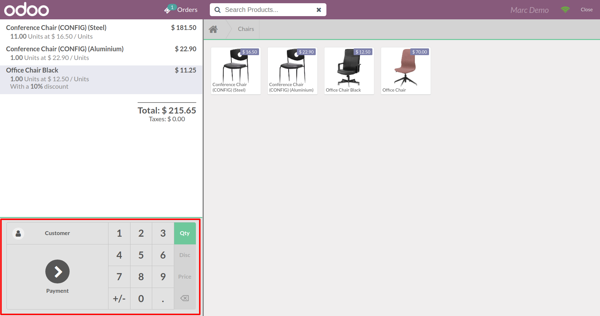
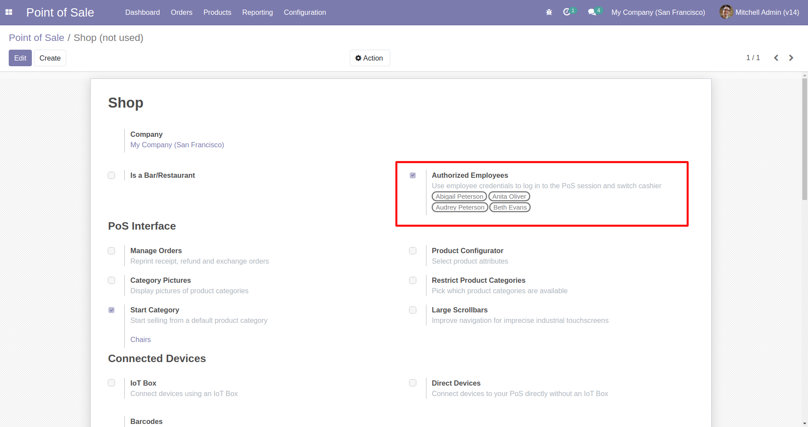
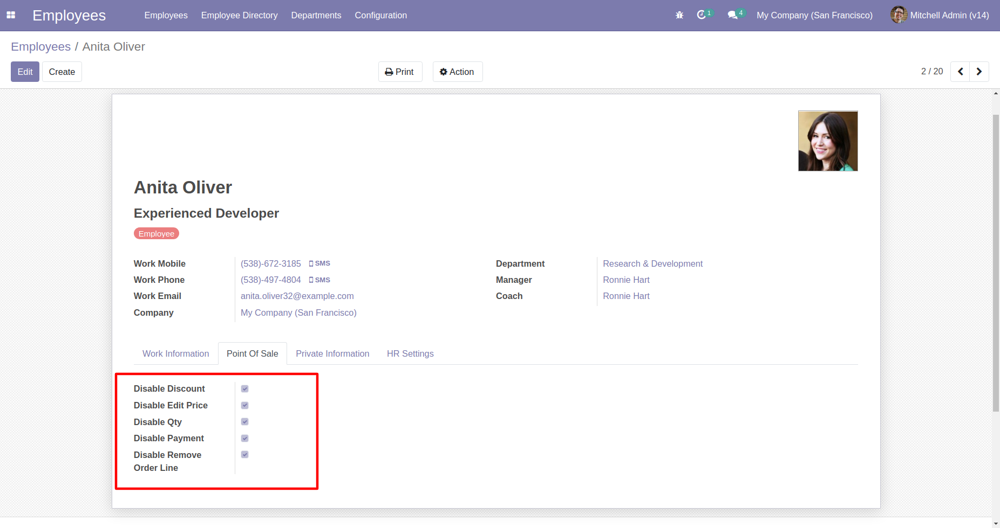
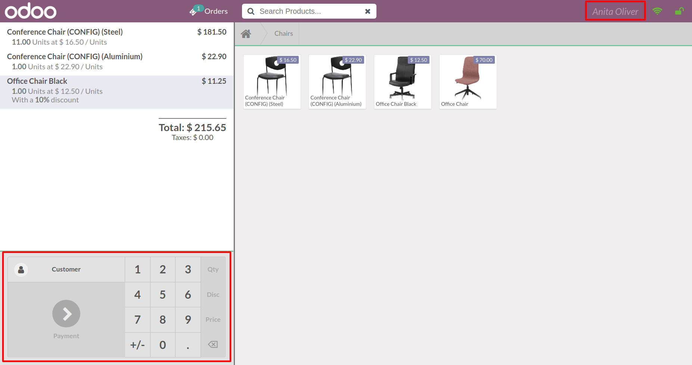

App Features
- Disable POS Features to the specific user or employee
- Enable/Disable POS Features on change cashier
- Compatible with community and enterprise
POS Access Rights
You can restrict pos features on user profile

Features is disabled to the user on pos screen (click disabled)

Also you can disable pos features for employees if you are using employee with login 
You can restrict pos feature on employee profile 
Features is disabled for the cashier on pos screen (system will enable/disable the buttons on changing cashier) 